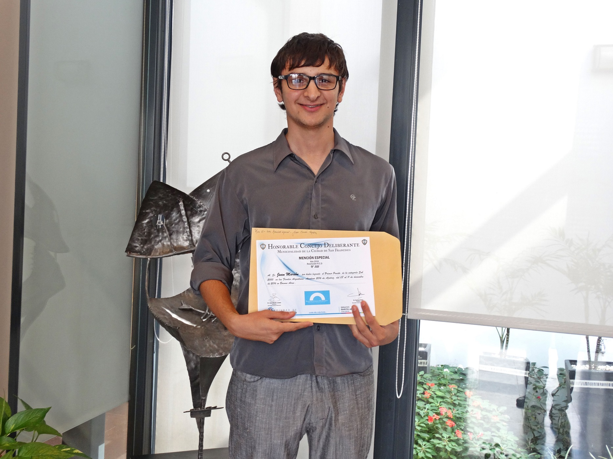

Mas de seis años de experiencia en soporte técnico de equipos informáticos.
Formación Académica
- Tecnicatura en Tecnologías de la Información
- 2018. UTN Facultad Regional Santa Fe
- Soporte Técnico Cisco Systems
- 2016-2017. Academia Cisco Gabriel Taborín
- Hardware de PC y Redes Informáticas
- 2015-2016. UTN Facultad Regional Villa María

Experiencia Laboral
- Asesoramiento Informático y Capacitaciones
- 2015 - Presente. Talleres personalizados. Cursos teórico/prácticos. Clases individuales y grupales
- Servicio Técnico de PC - TECNOFIX SOLUCIONES
- 2012 - Presente. Reparación Integral de Equipos Informáticos. Hardware y Software. Emprendimiento personal.
Conocimientos Complementarios
- Neurociencias y Liderazgo. Asociación Educar
- Neuromarketing y Psicoantropología del Consumo. BiiA LAB